San Diego Landscape Remodeling · Leave-behind kit · Version 1
What they keep on the counter after the walk
A folder, four inserts and a card with their own yard on it. It answers the five worries every buyer has, shows the care and the materials, and makes the choice feel obvious, while they talk it over with whoever wasn't at the consultation.
The folder
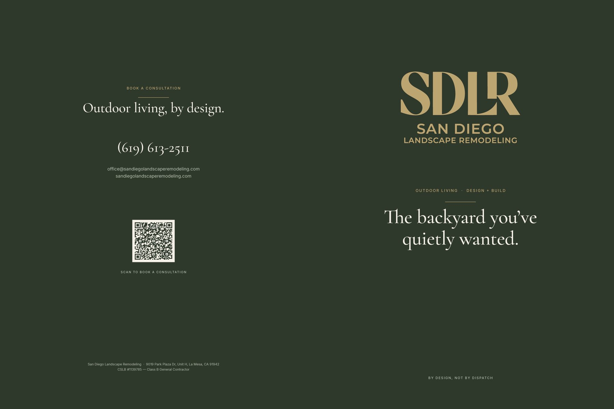
OutsideBack cover on the left, front on the right. 9 × 12 in, two pockets.
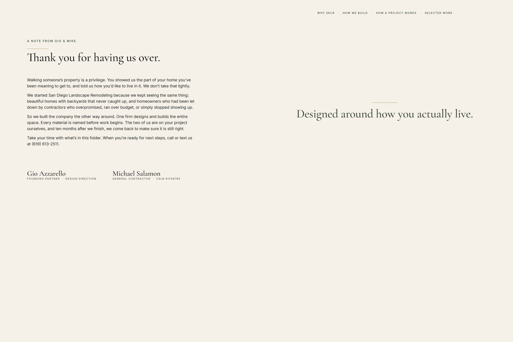
InsideA note from you and Mike on the left, with room above your names to sign each one by hand. The pockets cover the bottom 4 in of both panels.
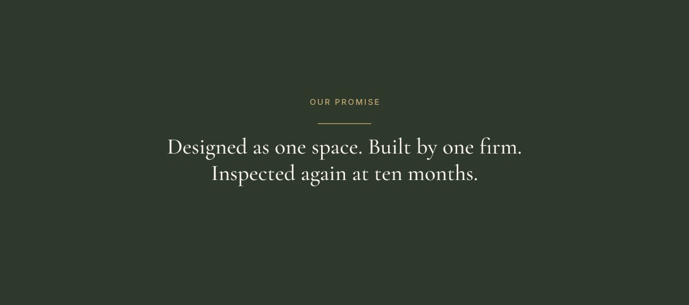
Left pocketThe promise in one line.Right pocketCard slits on the right hold the business cards you already have.
Insert 1 · Why SDLR
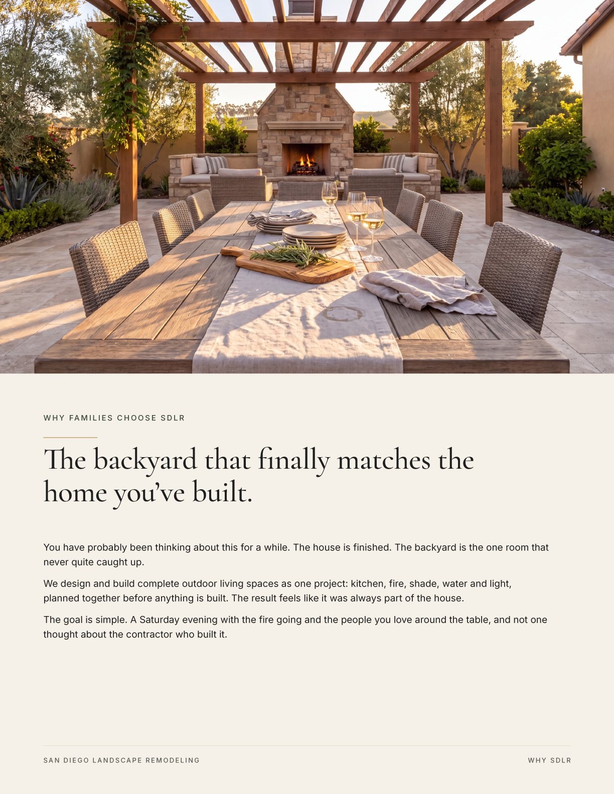
FrontThe feeling: the backyard that finally matches the home they've built.
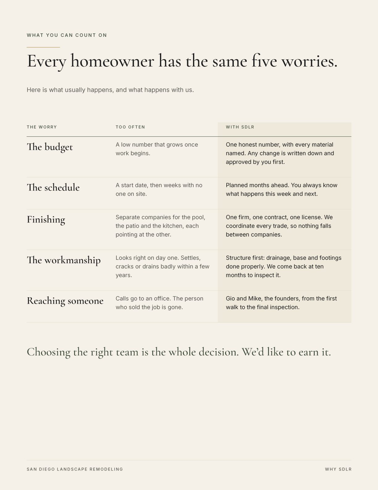
BackThe clear choice: five worries, what usually happens, what happens with SDLR.
Insert 2 · How we build
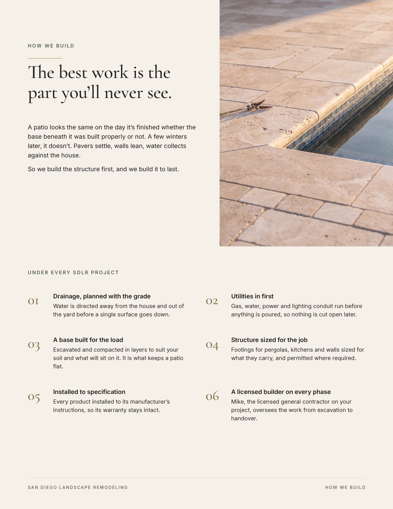
FrontQuality: the six things under every project.
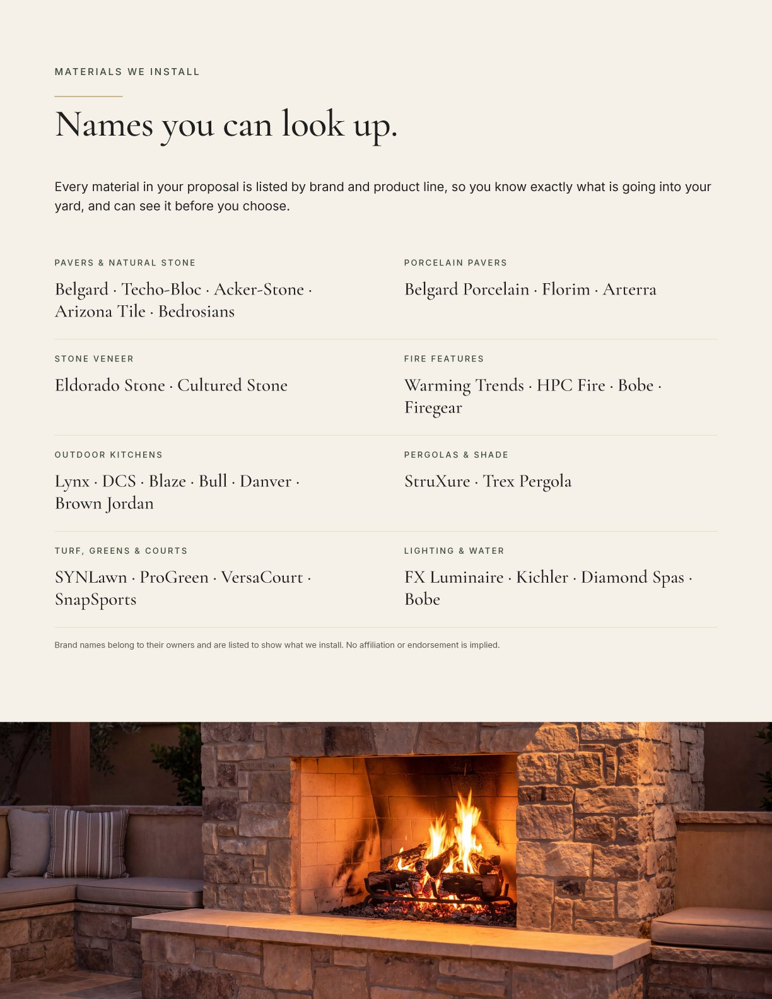
BackThe products, by brand: names they can look up.
Insert 3 · How a project works
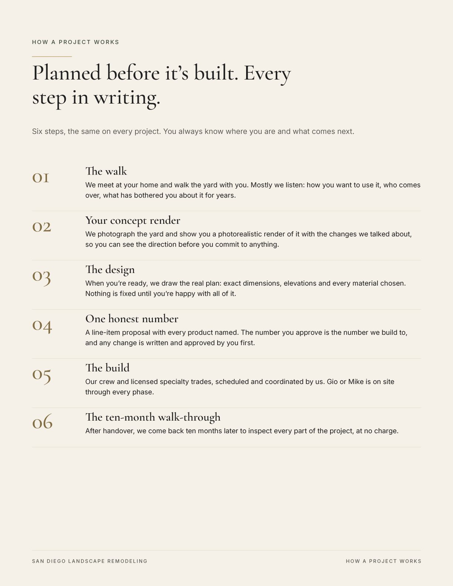
FrontThe six steps, the same on every project.
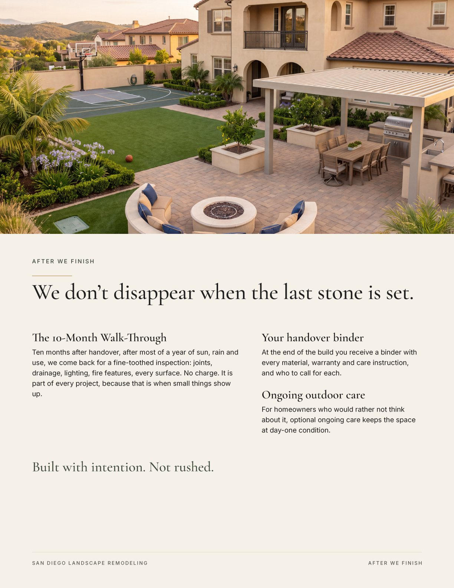
BackCare: the 10-Month Walk-Through, the handover binder, ongoing care.
Insert 4 · Selected work
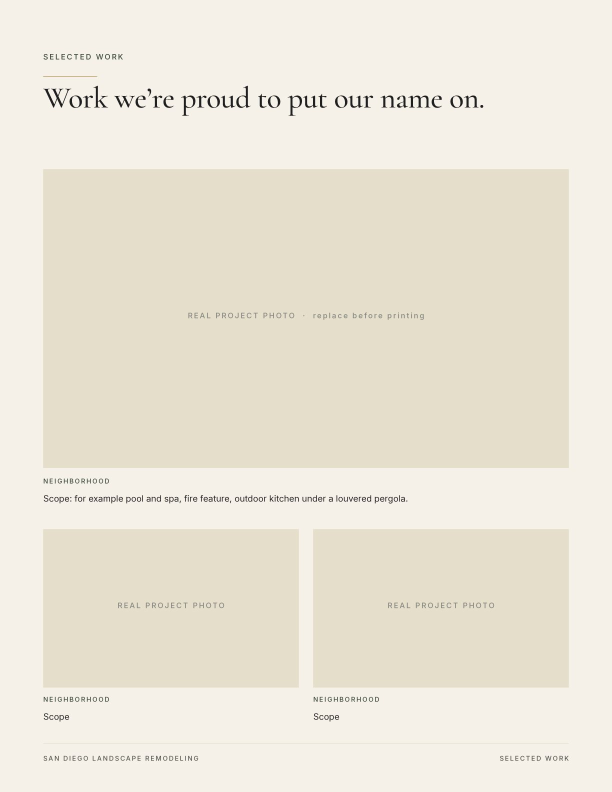
FrontA template: three frames for real finished projects. Nothing goes here until real photos are approved.
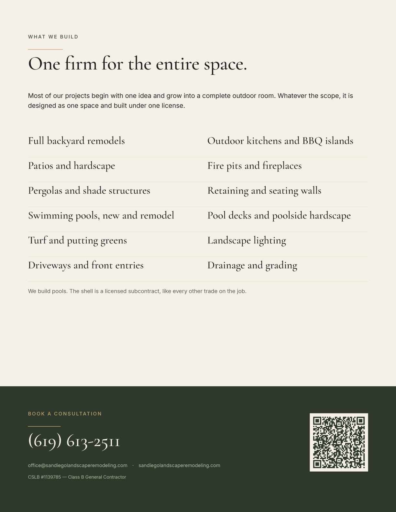
BackWhat we build, then the call to action and QR.
The concept-render card
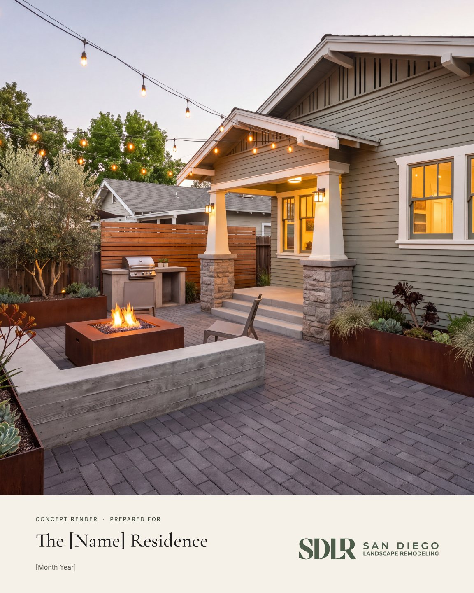
Front8 × 10, printed for each client with their own render. The photo here is a sample.
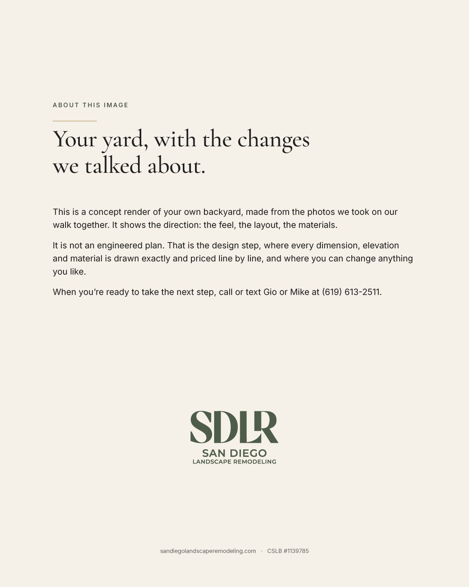
BackSays plainly that it's a concept render, not the plan, which keeps the paid design step valuable.
Before it prints
These lines are promises a homeowner will hold you to. Confirm each one is how you really work, or tell me what to change.
Every material in the proposal is listed by brand and product line.
Gio or Mike is on site through every phase, and Mike oversees the work from excavation to handover.
Projects are planned months ahead, and the client always knows what happens this week and next.
The number they approve is the number you build to; any change is written and approved first.
The six items under every project (drainage, utilities first, a compacted base, sized footings, installed to spec, Mike on every phase). Mike should read these.
Every client gets a handover binder with materials, warranties and care instructions.
"10-Month Walk-Through" as the program name (still a working title in the brand guide).
Left out on purpose: the word "insured" (carrier and limits aren't confirmed yet), testimonials (none with written consent yet), and any price floor.
Outlined CMYK, 0.125 in bleed. The editable layered Illustrator files, previews and the generator are in Drive under
02 Clients/san-diego-landscape-remodeling/assets/print-ready/leave-behind-kit/2026-11-22-v1/.